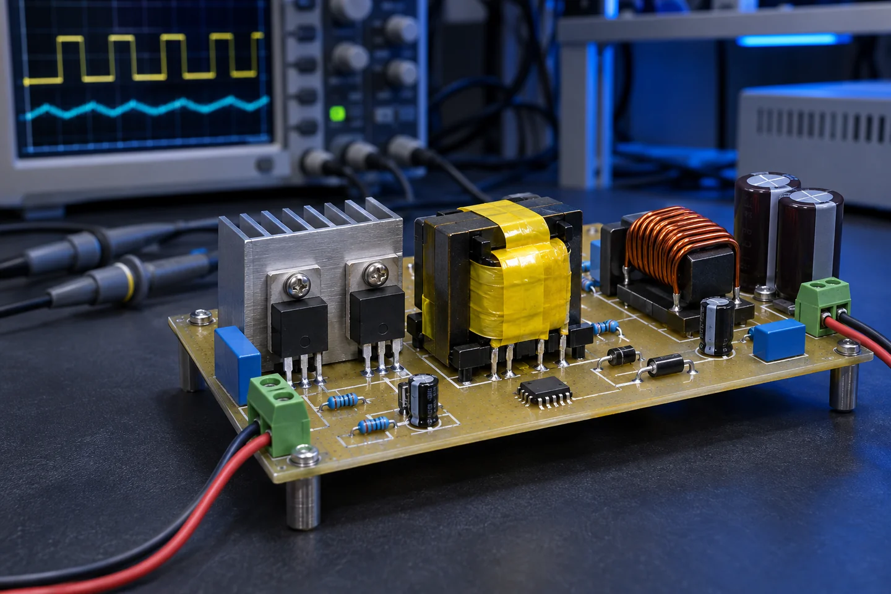
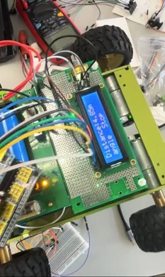
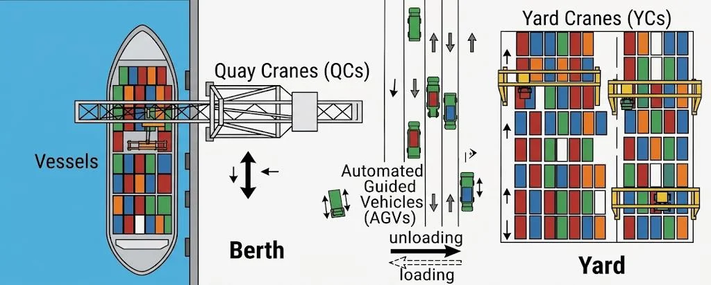
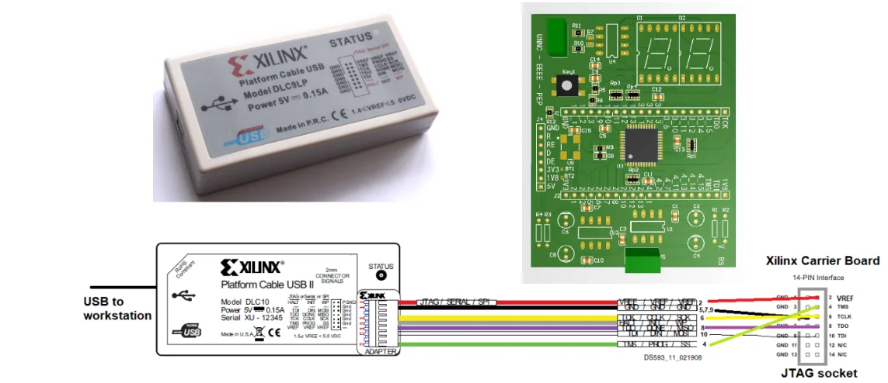
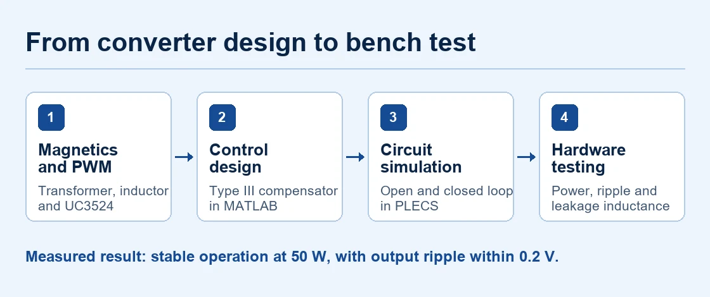
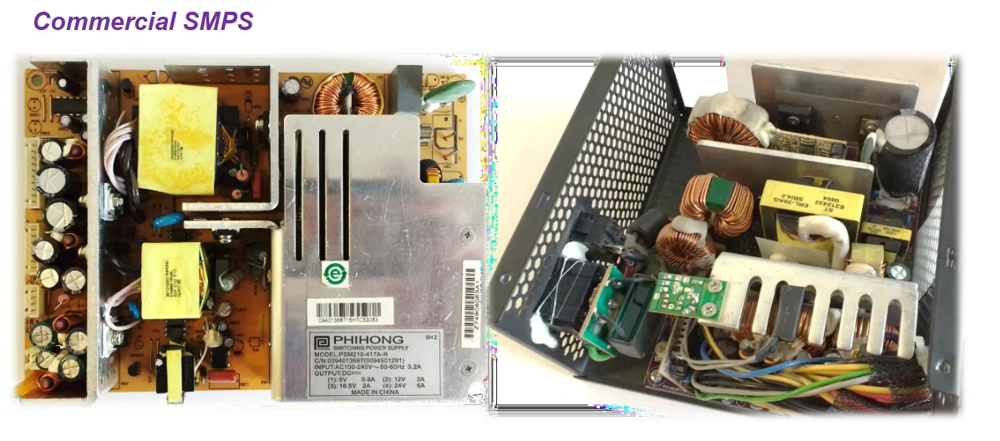
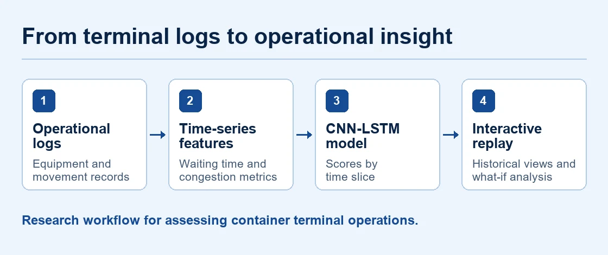

BEng (Hons) Electrical and Electronic Engineering
Sep 2023 – Jun 2027 (expected)University of Nottingham Ningbo China
Core study in electronic processing and communications, electrical energy conditioning and control, and engineering modelling.







Electrical and Electronic Engineering Undergraduate
University of Nottingham Ningbo China
GitHubI work on embedded systems, signal processing, and applied machine learning. My projects include a Doppler radar speed detector, an autonomous robotic vehicle, and a data pipeline for analysing container terminal operations.
University of Nottingham Ningbo China
Core study in electronic processing and communications, electrical energy conditioning and control, and engineering modelling.
Hikvision · Hangzhou
Department of Electrical and Electronic Engineering · UNNC
Worked with Dr Qianyu Liu on an AI-enabled system for assessing container terminal operations at Ningbo-Zhoushan Port.
Energy Conditioning Group Design Project
Our team designed and built a two-transistor forward converter and achieved stable 50 W operation with output ripple within 0.2 V.
Electronic Systems Group Design Project
I led a four-person team to develop and lab-test a real-time speed detector with a remote two-digit display.
Applied Electrical and Electronic Engineering Construction Project
Our Arduino and Raspberry Pi vehicle followed lines, recognised traffic lights, counted shapes, and braked for obstacles.